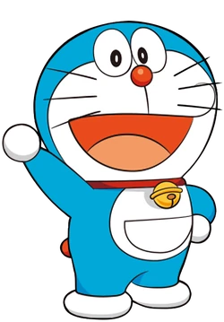

About Me

โดราเอมอน (Doraemon) โดราเอมอนหรือโดเรมอน เป็นหุ่นยนต์แมวจากโลกอนาคตกลับมาช่วยเหลือโนบิตะ โดยเซวาชิผู้เป็นเหลนของโนบิตะเป็นผู้ส่งมาดูแลโนบิตะ โดเรมอนกลัวหนูมากเพราะเคยโดนหนูกัดหูจนต้องตัดหูทิ้ง ชอบกินโดรายากิเนื่องจากตอนที่อยู่โลกอนาคตยังไม่มาหาโนบิตะ โดเรมอนได้รับโดรายากิกับแมวผู้หญิงตัวหนึ่งซึ่งน่ารักมาก โดเรมอนจึงชอบเป็นพิเศษและเขาจะมีอารมณ์โกรธทันทีเมื่อมีใครเรียกเขาว่า "แรคคูน" หรือ "ทานูกิ"